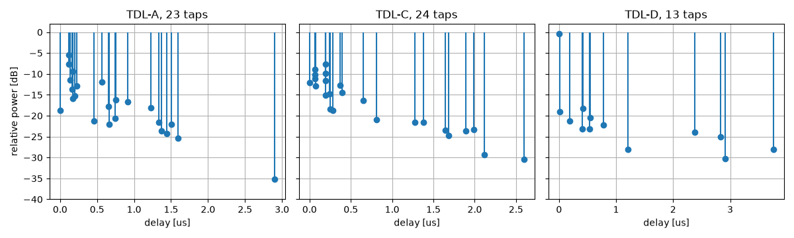
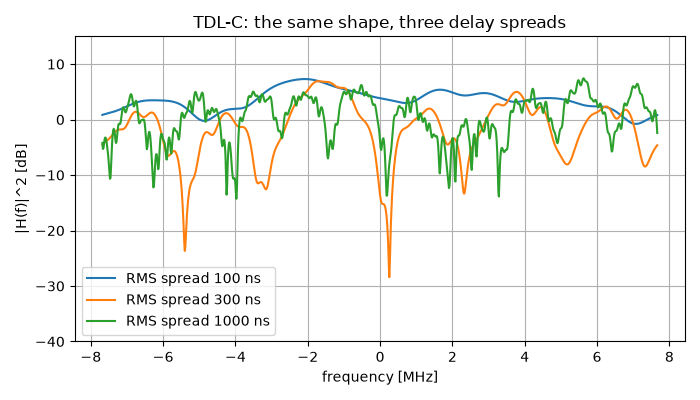
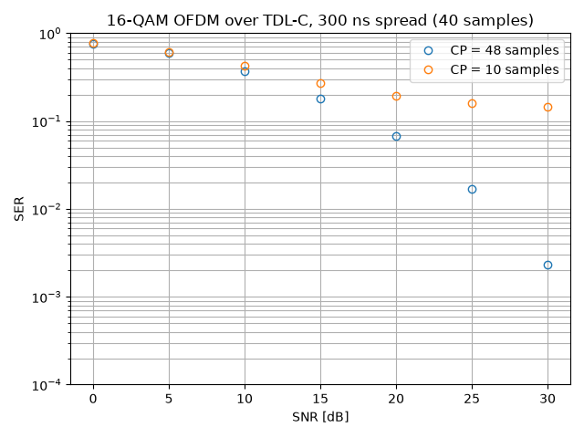

Multipath Fading Channels#
In this tutorial, we transmit through a tapped delay line: the standard model of a radio channel where the signal arrives several times, along paths of different lengths. The 3GPP catalogue of such channels – the LTE profiles and the 5G NR ones of TR 38.901 – ships with the library, and the tutorial ends on the one design rule they exist to settle: how long the cyclic prefix of an OFDM symbol has to be.
Note
Before you start. OFDM Tutorial used a frequency-selective channel and a cyclic prefix without saying where either number comes from. This tutorial is the answer: the standardized channels of 3GPP, and the rule that sizes the prefix.
What you’ll learn:
What a power delay profile is, and why a 5G TDL model is a shape rather than a channel.
How the delay spread and the coherence bandwidth are two readings of the same object.
How to put a standardized fading channel in a chain.
Why an OFDM link with too short a cyclic prefix hits an error floor that no SNR removes.
Introduction#
Prerequisites#
Make sure you have the following Python libraries installed:
numpy
matplotlib
comnumpy
Import Libraries#
import numpy as np
import matplotlib.pyplot as plt
from comnumpy.core import Sequential
from comnumpy.core.channels import AWGN, TappedDelayLineChannel
from comnumpy.core.fading import (available_delay_profiles, get_delay_profile,
validate_taps_fit)
from comnumpy.core.generators import SymbolGenerator
from comnumpy.core.mappers import SymbolDemapper, SymbolMapper
from comnumpy.core.metrics import compute_ser
from comnumpy.core.utils import get_alphabet
from comnumpy.core.visualizers import plot_error_rate
from comnumpy.ofdm.chains import OFDMReceiver, OFDMTransmitter
Define Parameters#
The sampling rate is what turns delays in nanoseconds into delays in samples, so it belongs with the channel and not with the modulation. At the LTE rate of 15.36 MHz one sample lasts 65 ns.
# Parameters
fs = 15.36e6 # LTE 15.36 MHz: 65 ns per sample
M = 16
alphabet = get_alphabet("QAM", M)
spread_ns = 300.0 # the scenario supplies the delay spread
profiles = ["TDL-A", "TDL-C", "TDL-D", "EVA", "ETU"]
The Power Delay Profile#
A multipath channel is a sum of resolvable paths, each with its own delay and its own fading coefficient:
The pairs \((\tau_l, \gamma_l)\) are the power delay profile. Its summary figure is the RMS delay spread, the standard deviation of the delay weighted by the power:
Two families are in the catalogue, and they differ in a way worth knowing. The LTE profiles of TS 36.101 – EPA, EVA, ETU – give delays in nanoseconds: they are channels, one per environment. The 5G NR profiles of TR 38.901 – TDL-A to TDL-E – give delays normalized by the delay spread (its equation 7.7-1), so a TDL model is a shape and the scenario supplies the scale:
# 1. The catalog. A TR 38.901 model is a *shape*: its delays are
# normalized, so the same table serves an indoor 30 ns scenario and an
# outdoor 1 us one. The LTE profiles are absolute instead, in ns.
print(f"{'profile':8s} {'taps':>5s} {'rms [ns]':>9s} {'max [ns]':>9s} "
f"{'K [dB]':>7s} taps at 15.36 MHz")
for name in profiles:
kwargs = {"delay_spread_ns": spread_ns} if name.startswith("TDL") else {}
profile = get_delay_profile(name, **kwargs)
delays, _ = profile.to_taps(fs)
rice = "-" if profile.rice_k_dB is None else f"{profile.rice_k_dB:.1f}"
print(f"{name:8s} {profile.n_taps:5d} {profile.rms_delay_spread_ns:9.1f} "
f"{profile.delays_ns[-1]:9.1f} {rice:>7s} {delays.size:d} "
f"(longest at sample {delays[-1]})")
print("catalog:", ", ".join(available_delay_profiles()))
profile taps rms [ns] max [ns] K [dB] taps at 15.36 MHz
TDL-A 23 300.0 2897.6 - 16 (longest at sample 45)
TDL-C 24 300.0 2595.7 - 15 (longest at sample 40)
TDL-D 13 298.1 3757.5 13.3 10 (longest at sample 58)
EVA 9 356.7 2510.0 - 8 (longest at sample 39)
ETU 9 990.9 5000.0 - 9 (longest at sample 77)
catalog: EPA, ETU, EVA, TDL-A, TDL-B, TDL-C, TDL-D, TDL-E
Three things to read there.
The RMS spread column is the parameter that was asked for – 300 ns for
the three TDL entries, because that is what delay_spread_ns=300 means.
It is not a property of the table but a consequence of its normalization, and
comnumpy.core.fading checks it at construction: an entry whose spread
does not come out where the standard says is a mistyped entry (decision D20).
The last column is smaller than the second. TDL-A publishes 23 paths but only 16 land on distinct samples at 15.36 MHz: paths closer together than 65 ns are one resolvable tap, and their powers add. Sampling faster resolves more of them, which is a statement about the receiver, not about the channel.
TDL-D has a Rice factor. Its first tap carries a specular component – a line of sight – 13.3 dB above the diffuse part of the same tap:
fig1, axes1 = plt.subplots(nrows=1, ncols=3, figsize=(12, 3.6), sharey=True)
for ax, name in zip(axes1, ["TDL-A", "TDL-C", "TDL-D"], strict=True):
profile = get_delay_profile(name, delay_spread_ns=spread_ns)
ax.stem(profile.delays_ns * 1e-3, 10 * np.log10(profile.powers_lin),
basefmt=" ")
ax.set_title(f"{name}, {profile.n_taps} taps")
ax.set_xlabel("delay [us]")
ax.grid(True)
axes1[0].set_ylabel("relative power [dB]")
axes1[0].set_ylim(-40, 2)
plt.tight_layout()
plt.savefig(f"{img_dir}/multipath_fig1.png")
{kind=link}

The shapes say what the environments are: TDL-A spreads its energy over the whole window, TDL-C concentrates it in two clusters, and TDL-D is a spike followed by 30 dB of scatter.
Delay Spread and Coherence Bandwidth#
The delay profile is one side of a Fourier pair; the other is the frequency correlation of the channel,
The width of \(R\) is the coherence bandwidth \(B_c\): two frequencies further apart than that fade independently. Since \(R\) is the transform of the profile, stretching the delays by a factor compresses \(R\) by the same factor – the product \(B_c \sigma_\tau\) is a constant of the profile’s shape.
# 2. What a delay spread does to the frequency response. The channel is
# a chain block like any other: give it a profile and a sampling rate.
fig2, ax2 = plt.subplots(figsize=(7, 4))
print("\ndelay spread -> coherence bandwidth")
for spread in (100.0, 300.0, 1000.0):
profile = get_delay_profile("TDL-C", delay_spread_ns=spread)
channel = TappedDelayLineChannel(profile, fs=fs, seed=3)
channel(np.ones(4096, dtype=complex)) # one block-fading draw
taps = np.zeros(int(channel.delays_[-1]) + 1, dtype=complex)
taps[channel.delays_] = channel.h_[:, 0]
response = np.abs(np.fft.fftshift(np.fft.fft(taps, 1024))) ** 2
frequencies = np.fft.fftshift(np.fft.fftfreq(1024, 1 / fs)) * 1e-6
ax2.plot(frequencies, 10 * np.log10(response),
label=f"RMS spread {spread:.0f} ns")
# The frequency correlation is the Fourier transform of the power
# delay profile, R(df) = sum_l gamma_l exp(-j 2 pi df tau_l), so the
# coherence bandwidth is a property of the profile and not of one
# draw. Convention here: the width at which the envelope
# correlation |R|^2 has fallen to one half.
grid = np.linspace(0, fs / 2, 8192)
correlation = np.abs(np.exp(-2j * np.pi * np.outer(
grid, profile.delays_ns * 1e-9)) @ profile.powers_lin) ** 2
crossing = np.flatnonzero(correlation < 0.5 * correlation[0])
coherence = grid[crossing[0]]
print(f" {spread:6.0f} ns B_c = {coherence * 1e-6:5.2f} MHz "
f"B_c x sigma = {coherence * spread * 1e-9:.3f} "
f"1/(5 sigma) = {1 / (5 * spread * 1e-9) * 1e-6:5.2f} MHz")
ax2.set_xlabel("frequency [MHz]")
ax2.set_ylabel("|H(f)|^2 [dB]")
ax2.set_title("TDL-C: the same shape, three delay spreads")
ax2.set_ylim(-40, 15)
ax2.legend()
ax2.grid(True)
plt.tight_layout()
plt.savefig(f"{img_dir}/multipath_fig2.png")
delay spread -> coherence bandwidth
100 ns B_c = 3.29 MHz B_c x sigma = 0.329 1/(5 sigma) = 2.00 MHz
300 ns B_c = 1.10 MHz B_c x sigma = 0.329 1/(5 sigma) = 0.67 MHz
1000 ns B_c = 0.33 MHz B_c x sigma = 0.329 1/(5 sigma) = 0.20 MHz
The middle column is the point: 0.329 at all three spreads, to three digits. The scaling law is exact, and it comes from the normalization rather than from any approximation. The last column is the textbook rule of thumb \(B_c \approx 1/(5\sigma_\tau)\), i.e. a constant of 0.2 against this profile’s 0.329 – the same law with a different constant, which is what a rule of thumb is: the constant depends on the shape of the profile and on where one decides the correlation has “fallen off”.
{kind=link}

The figure is the same statement in one realization. At 100 ns the response is gently sloped over the 15 MHz band; at 1 us it is cut by notches 20 dB deep, a few hundred kilohertz apart. A single-carrier receiver has to equalize that; an OFDM receiver only has to survive it, one subcarrier at a time.
What the Cyclic Prefix Is For#
The cyclic prefix exists to turn the channel’s linear convolution into a circular one, because only the circular one diagonalizes in the DFT basis:
Copying the last \(N_{cp}\) samples of a block to its front achieves that – but only if the channel is shorter than the copy. The condition is exactly
Below it, the tail of the previous OFDM symbol is still arriving when the FFT window opens: inter-symbol interference, and with it a loss of orthogonality between subcarriers. The example runs the same link twice, once on each side of that condition:
# 3. What it costs an OFDM link, and what the cyclic prefix is for.
# The prefix turns the linear convolution into a circular one -- but
# only if it is longer than the channel. Shorter, and the previous
# symbol leaks in: an error floor no SNR removes.
N_carrier = 128
N_symbols = 400
N = N_carrier * N_symbols
snr_dB_list = np.arange(0, 31, 5)
profile = get_delay_profile("TDL-C", delay_spread_ns=spread_ns)
longest = int(np.rint(profile.delays_ns[-1] * 1e-9 * fs))
print(f"\nTDL-C at {spread_ns:.0f} ns: longest path at sample {longest}")
curves = {}
for N_cp in (longest + 8, longest // 4):
link = Sequential([
SymbolGenerator(M, name="tx"),
SymbolMapper(alphabet),
OFDMTransmitter(N_carrier, N_cp),
TappedDelayLineChannel(profile, fs=fs, name="fading"),
AWGN(snr_dB=20.0, name="noise"),
], taps=["tx"], name=f"OFDM, CP = {N_cp}")
validate_taps_fit(profile, fs, N)
errors = []
for snr_dB in snr_dB_list:
link.seed(11) # same channel draw at every SNR
link.set_params(**{"noise.snr_dB": float(snr_dB)})
y = link(N)
# the receiver has to know the channel: read what the fading
# block actually realized (block fading, so column 0 is it)
fading = link["fading"]
taps = np.zeros(int(fading.delays_[-1]) + 1, dtype=complex)
taps[fading.delays_] = fading.h_[:, 0]
receiver = Sequential([
OFDMReceiver(N_carrier, N_cp, h=taps),
SymbolDemapper(alphabet),
])
errors.append(compute_ser(link.tap("tx"), receiver(y)))
curves[f"CP = {N_cp} samples"] = errors
print(f" CP = {N_cp:3d} samples ({N_cp / fs * 1e6:.2f} us): "
+ " ".join(f"{value:.3f}" for value in errors))
ax = plot_error_rate(snr_dB_list, curves, ylabel="SER",
title=f"{M}-QAM OFDM over TDL-C, {spread_ns:.0f} ns "
f"spread ({longest} samples)")
ax.set_ylim(1e-4, 1)
plt.tight_layout()
plt.savefig(f"{img_dir}/multipath_fig3.png")
TDL-C at 300 ns: longest path at sample 40
CP = 48 samples (3.12 us): 0.761 0.594 0.369 0.181 0.068 0.017 0.002
CP = 10 samples (0.65 us): 0.770 0.616 0.425 0.274 0.192 0.159 0.145
{kind=link}

With 48 samples of prefix – eight more than the longest path – the curve falls like an ordinary fading curve, reaching \(2 \times 10^{-3}\) at 30 dB. With 10 samples it stops falling at 0.145. The last three points are 0.192, 0.159, 0.145: fifteen more decibels of transmit power buy nothing, because what limits the link is no longer the noise but the part of the channel that the prefix failed to cover. That is an error floor, and the only things that remove it are a longer prefix or a receiver that equalizes across symbols.
Two remarks on the code. The channel is an ordinary chain block, configured
by a profile and a sampling rate. And the receiver is a second chain,
because it needs something the transmitter does not have: the channel it is
inverting. Here it reads what the fading block actually realized – h_
and delays_, the estimated attributes of decision D23 – which is the
simulation’s way of saying “assume perfect channel knowledge”; a real
receiver estimates them from pilots.
The chain, as the chain itself describes it:
flowchart LR
tx["SymbolGenerator"]
symbol_mapper["SymbolMapper"]
ofdm_transmitter["OFDMTransmitter"]
fading["TappedDelayLineChannel"]
noise["AWGN"]
tx --> symbol_mapper
symbol_mapper --> ofdm_transmitter
ofdm_transmitter --> fading
fading --> noise
classDef tapped stroke-dasharray: 4 2
class tx tapped
# The chain diagram this tutorial shows is exported from the chain
# itself (D33c), so the picture cannot drift from the code.
mermaid_dir = "../../docs/examples/mermaid/"
for diagram_name, diagram_chain in [("multipath", link)]:
with open(f"{mermaid_dir}/{diagram_name}.mmd", "w") as stream:
stream.write(diagram_chain.to_mermaid())
Conclusion#
You have transmitted through the standardized fading channels of 3GPP.
You have learned how to:
Read a power delay profile, and take one from the catalogue by name.
Scale a normalized 5G TDL model to the delay spread of a scenario.
Convert a delay spread into a coherence bandwidth, and see the constant that links them.
Size the cyclic prefix of an OFDM symbol, and recognize the error floor of a prefix that is too short.
From here, you can:
Set
f_doppleron the channel: the taps then vary within a block, and the same link starts to lose orthogonality for a second reason.Compare a single-carrier receiver on the same channel (see the OFDM tutorial).
Replace the perfect channel knowledge by an estimate from the pilot subcarriers of a real allocation.
The next tutorial, MIMO Chain Tutorial, attacks the same fading from the other side: instead of surviving a bad channel, use several antennas so that a bad channel becomes unlikely.